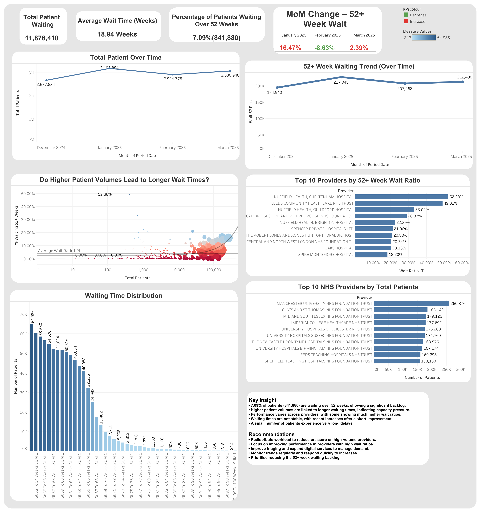

Volume, Delays & Provider Performance Analysis using Python and Tableau.
This project analyses NHS waiting list data to understand the scale of long waiting times, identify the drivers of the 52+ week backlog, and compare provider performance. The goal is to uncover actionable insights that can support capacity planning, improve patient outcomes, and reduce long waiting times.
The analysis focuses on:
NHS providers are under pressure from long patient waiting times, especially for patients waiting more than 52 weeks for treatment.
This project aims to answer:
The dataset contains NHS waiting list data with fields such as:
ProviderPeriod DateTotal PatientsWait 52 PlusWait Ratio KPIMoM % Change Wait 52 PlusGt 52 To 53 Weeks SUM 1 through Gt 99 To 100 Weeks SUM 1These week-band columns were especially important because they allowed the project to measure the long-tail backlog and build the waiting time distribution chart.
| Tool | Purpose |
|---|---|
| Python | Data cleaning, transformation, KPI calculations |
| Tableau | Dashboard development and data visualisation |
| GitHub Pages | Portfolio publishing |
| HTML/CSS | Project webpage design |
Python was used to prepare the data for analysis and Tableau visualisation. The cleaning step focused on making the dataset analysis-ready and creating useful business metrics.
This step:
import pandas as pd
import numpy as np
df = pd.read_csv("final_nhs_analysis.csv")
clean_df = df.copy()
clean_df.columns = [col.strip() for col in clean_df.columns]
clean_df["Period Date"] = pd.to_datetime(clean_df["Period Date"], errors="coerce")
numeric_cols = clean_df.select_dtypes(include=["number"]).columns
clean_df[numeric_cols] = clean_df[numeric_cols].fillna(0)gt_52_cols = [
col for col in clean_df.columns
if col.startswith("Gt ") and "Weeks SUM 1" in col
]
clean_df["wait_52_plus"] = clean_df[gt_52_cols].sum(axis=1)
clean_df["total_patients"] = clean_df["Total Patients"]This code calculates the main KPIs used in the dashboard.
total_patients_kpi = clean_df["total_patients"].sum()
wait_52_plus_kpi = clean_df["wait_52_plus"].sum()
wait_ratio_kpi = wait_52_plus_kpi / total_patients_kpi
print("Total Patients:", f"{total_patients_kpi:,.0f}")
print("Patients Waiting 52+ Weeks:", f"{wait_52_plus_kpi:,.0f}")
print("Wait Ratio:", f"{wait_ratio_kpi:.2%}")monthly_trend = (
clean_df.groupby(clean_df["Period Date"].dt.to_period("M"))
.agg(
total_patients=("total_patients", "sum"),
wait_52_plus=("wait_52_plus", "sum")
)
.reset_index()
)
monthly_trend["wait_ratio"] = (
monthly_trend["wait_52_plus"] / monthly_trend["total_patients"]
)
monthly_trend["Period Date"] = monthly_trend["Period Date"].astype(str)provider_summary = (
clean_df.groupby("Provider")
.agg(
total_patients=("total_patients", "sum"),
wait_52_plus=("wait_52_plus", "sum")
)
.reset_index()
)
provider_summary["wait_ratio"] = (
provider_summary["wait_52_plus"] / provider_summary["total_patients"]
)
top_10_by_patients = provider_summary.nlargest(10, "total_patients")
top_10_by_wait_ratio = provider_summary.nlargest(10, "wait_ratio")monthly_trend["mom_change_wait_52_plus"] = (
monthly_trend["wait_52_plus"].pct_change()
)
monthly_trend["mom_change_wait_ratio"] = (
monthly_trend["wait_ratio"].pct_change()
)Based on the analysis and dashboard, several important patterns were identified.
Around 7.09% of patients, equal to 841,880 people, are waiting over 52 weeks. This shows a major backlog that still needs focused action.
The scatter plot suggests that providers with larger patient volumes tend to experience longer waiting times, pointing to capacity pressure.
Some providers have much higher wait ratios than others, showing that performance is not consistent across the system.
Monthly changes show short-term improvement followed by renewed increases, meaning progress has not yet become stable.
The waiting time distribution shows that while most patients are concentrated in earlier week bands, a smaller group experiences very long delays, which can be especially harmful.
The final analysis was visualized in Tableau through a dashboard that combines KPIs, trends, provider comparisons, scatter analysis, and waiting time distribution.
The dashboard highlights:
From the visualization:

Explore the full interactive Tableau dashboard below: